项目七 Flash动画制作
一、实验目的
Flash是由macromedia公司推出的交互式矢量图和 Web 动画的标准，由Adobe公司收购。网页设计者使用 Flash 创作出既漂亮又可改变尺寸的导航界面以及其他奇特的效果。
通过本实验，有助于了解二维动画的原理和常用工具，学习并掌握Flash动画制作的制作流程和基本制作方法。
二、实验内容
1.熟悉Flash的工作界面。
2.
三、实验步骤
在Windows中打开“开始”菜单，在“程序”中找到“Macromedia Flash 8”点击运行，下图是Flash的主界面。
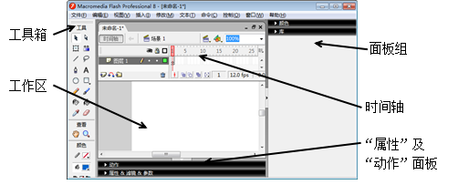
图36 Flash主界面
工作区：包括舞台和后台。图36中白色区域为舞台，显示当前编辑的Flash文档；灰色区域为后台。只有放在舞台上的元件或动画播放时才是可见的。
面板组：利用“窗口”菜单选择要打开或关闭的面板。
工具箱：包含各种选择工具、绘图工具等。
时间轴：组织和控制一定时间内的图层、帧、播放头等元素。
1.逐帧动画实例——蝴蝶飞翔
逐帧动画是将每一帧组织好，然后逐帧播放
1）选择“文件|新建”命令，在弹出的“新建文档”对话框中选择“Flash文档”新建一个Flash文档。点击展开底部的“属性”面板并单击大小按钮，打开“文档属性”对话框，将文档的大小修改为800×600像素，如图37所示。
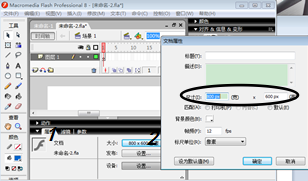
图37 修改文档大小
2）选择“文件|导入|导入到库”命令，将文件夹中的四张蝴蝶图片导入到库中。点击展开右侧的“库”面板，可以看到四张刚加入的图片。
3）选择菜单“插入|新建元件”命令，弹出“创建新元件”对话框。设置元件的类型为“影片剪辑”，名称为“蝴蝶”。点击“确定”按钮将在库中新建一个名为蝴蝶的元件，并切换到该元件的编辑状态。
3）将“库”面板中的“butterfly1.jpg”拖动至工作区域中间（十字形即为中心处）。这时，时间轴默认的第1个空白帧将自动转换为关键帧。选择菜单“窗口|信息”打开信息面板并单击展开，将图片的元件位置(X,Y)修改为以中心为原点，其值修改为(X:0 Y:0)，如图38所示。
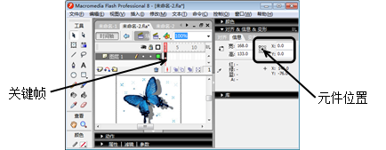
图38 第一个关键帧的设置
4）在时间轴的第2帧处单击右键选择“插入空白关键帧”命令，插入一个新的空白关键帧。将图库中的“butter2.jpg”拖入到舞台，同样在信息面板中将位置修改为(X:0 Y:0)。如果图片的大小不一样，也可以通过信息面板进行设置。
5）按照相同的方式，分别在第3帧和第4帧中加入另外的两幅图片，且修改坐标使四张图片重合。
6）在第3个关键帧上单击右键选择“复制帧”，在第5帧上单击右键选择“粘贴帧”，将第3帧的内容复制到第五帧上。按同样的方法，将第2帧的内容复制到第6帧上。
7）按Enter键预览动画，或选择菜单“控制|播放”命令查看效果，也可选择菜单“控制|连续播放”命令可以查看动画连续播放效果。
8）如果希望改变播放速度，可以在文档的属性面板中修改帧频的值。值越小，播放的速度越慢。
2.元件制作实例——蒲公英
元件是在Flash中创建的图形、按钮或影片剪辑，可在整个文档或其他文档中重复使用。
1）选择菜单“插入|新建元件”，新建一个名为“蒲公英”的图形元件。为方便制作，在底端的“属性”面板中，将文档的背景色修改为黑色。
2）在左侧的工具箱中选择“线条工具”，并将下面的“笔触颜色”设置为“#92EC00”，在底端的属性面板将直线的笔触高度设置为7，实线，如下图39所示。
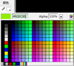 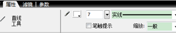
图39 设置“直线”属性
3）在工作区域按住鼠标拖动画出一下斜线。选择工具箱中的“选择工具”，移动鼠标靠近斜线。当鼠标接近线条时（除去两端），可以看到鼠标形状变为“箭头+圆弧”形状。按住鼠标轻轻拖动，将直线修改为一段曲线，作为蒲公英的花柄，如图40所示。
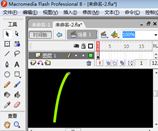
图40 “蒲公英”花柄
4）在时间轴上单击“插入图层”按钮建立一个新的图层2。再次选择“直线工具”并设置该直线的颜色为白色，笔触高度为1，在工作区域拖出一条水平直线。
注意：不要和上一步所绘制的花柄在同一图层，以免相互重叠而影响后面的调整。另外，将它们的位置暂时不要放在一起。
5）打开“信息”面板，将元件的位置修改为(X:0 Y:0)。选中该直线，使用Ctrl+C键及Ctrl+V键在工作区域复制一条新的直线，并通过“信息”面板修改位置为(X:0 Y:0)，“变形”面板修改旋转值为3度。
6）通过鼠标拖动将两条白色的线同时选中，重复5步操作并设置合适的旋转值，直至加入足够多的线条形成一个圆形的花朵状，如图41所示。
注：也可以通过工具箱的“任意变形工具”来对直线进行旋转。
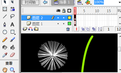
图41 “蒲公英”花瓣
7）单击“插入图层”在图层2上在新建一个图层3。选择工具箱中的“椭圆工具”，首先在底端将“笔触颜色”设置为“无色”。鼠标单击“颜色”面板展开，在该面板的“混色器”中设置填充类型为“放射状”。拖动左边的滑块至中部，并选中该滑块，将其颜色设置为白色，透明度100%。选中右边的滑块，同样设置颜色为白色，透明度为0%。设置完成后，按住Shift键并拖动鼠标，在工作区中画出一个正圆形，如图42所示。
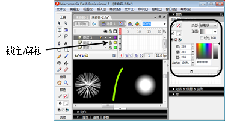
图42 设置椭圆“填充”式样
8）修改各部分的大小及位置。将图层2锁定（如图42），单击“选择工具”先将花柄选中，再按住鼠标左键移动花柄到圆形花朵下，使花柄的上端与圆形中心重合，完成后锁定图层1。同样的方法，移动图层3上的正圆形，使其圆心与图层2的圆重合（可配合键盘方向键进行调整）。选择工具箱中的“任意变形工具”，根据需要调整正圆形的大小，完成蒲公英的造型，如图43所示。
图43 “蒲公英”元件
3.补间动画实例——飞舞的蒲公英
做flash动画时，在两个关键帧中间需要做“补间动画”，才能实现图画的运动；插入补间动画后两个关键帧之间的插补帧是由计算机自动运算而得到的。
1）选择菜单“插入|新建元件”，新建一个名为“飞舞1”的影片剪辑（此时已切换到该影片剪辑的编辑状态）。
2）展开右边的“库”面板，将库中的“蒲公英”蒲公英元件拖入到舞台中（十字形左下处），此时时间轴的第1帧变为一个关键帧。
3）在时间轴的第120帧处单击右键，选择“插入关键帧”。在第100帧处拖动“蒲公英”（十字形右上处）适当长距离，并使用工具箱中的变形工具修改大小（缩小）。
4）可以看到，此时时间轴上有两个关键帧。在这两个关键帧间任意一帧上单击右键，选择“创建补间动画”，展开底部的“属性”面板，设置“顺时针”旋转3次，如图44所示。
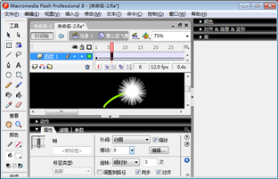
图44 创建补间动画
5）单击Enter键播放动画效果，可以看到“蒲公英”在两点间旋转直线运动。
6）再新建一个名为“飞舞2”的影片剪辑，将“蒲公英”元件拖入到舞台左边。在时间轴的120帧处单击右键加入一个关键帧，修改“蒲公英”的大小。
7）单击时间轴上的“添加运动引导层”按钮，这时该图层的上方将出现一个“引导层”。
8）选择工具箱上的“铅笔工具”并在下面的选项中设置线条为“平滑”，颜色为白色，如图45所示。利用铅笔工具在舞台中画出一条弧线，该弧线允许交叉，但必须是连续的。也可以将一个已经绘制好的路径粘贴到运动引导层。
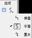
图45 “铅笔工具”设置及绘制的引导线
9）点击图层1上的第1个关键帧，使用“选择工具”拖动“蒲公英”，使其紧贴至路径的起点。
注意：确保工具箱上的“紧贴至对象”选项选中，且拖动过程中“蒲公英”跳动到端点，表示吸附上。操作过程中，以免图层间干扰，可锁定引导层。
10）同样，点击图层1第120处的关键帧，使“蒲公英”紧贴至路径的终点。在两个关键帧间创建补间动画，并在“属性”面板中修改“逆时针”旋转3次。
11）在图层1的第10帧和第110帧处分别单击右键，选择“插入关键帧”命令。单击第1帧并选择舞台上的“蒲公英”元件，在底部的“属性”面板中，将其颜色的“Alpha”值修改为0%，如图46所示。同样修改第120帧处的“蒲公英”元件。
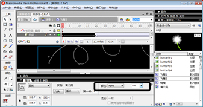
图46 第1帧处“蒲公英”元件属性
12）该影片剪辑时间轴效果如图47所示。
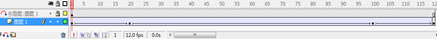
图47 “飞舞2”影片剪辑时间轴
4.遮罩动画实例——文字滚动
可以使用遮罩层显示下方图层中的全部或部分区域内容。遮罩层中的对象可以是填充的形状、文字对象、图形元件的实例或影片剪辑。
1）新建一个名为“再别康桥”的图形元件。工具箱中选择“文本工具”，并将文本的属性设置为楷体、30号字，行距4pt，如图48所示。输入徐志摩的《再别康桥》诗句。
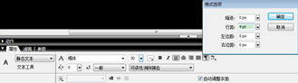
图48 设置“文本”属性
2）新建一个名为“圆柱”的图形元件。在工具箱中选择“矩形工具”，展开右侧的“颜色|混色器”面板。在“混色器”面板中，将“笔触颜色”设置为无色，填充类型设置为“线性”。填充样式上共有5个滑块，颜色任意，Alpha值从左到右分别为0%、60%、100%、60%、0%，如图49所示。
注意：在填充样式条的空白处单击即可增加一个滑块，左键点击一个滑块拖动移开即可删除一个滑块。
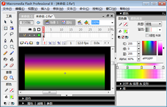
图49 “圆柱”元件设置
3）拖动鼠标在工作区中画出一个矩形，并使用变形工具将其旋转90度，适当的修改大小（长度应大于“再别康桥”的图形元件的文本宽度）。
4）再新建一个名为“遮罩文字”的影片剪辑，从“库”面板中将“圆柱”元件拖入到工作区中心处，图层1的第1帧变为关键帧。在第240帧处单击右键，选择“插入帧”。
5）单击时间轴上的“插入图层” 按钮，新建图层2。单击图层2的第1帧，将库中的“再别康桥”元件拖入到工作区，调整位置在圆柱的下方。
按钮，新建图层2。单击图层2的第1帧，将库中的“再别康桥”元件拖入到工作区，调整位置在圆柱的下方。
6）在图层2的第240帧处单击右键，选择“插入关键帧”，并修改该帧中文本的位置，使其位于圆柱的上方。在两个关键帧间的任意一帧上单击右键，选择“创建补间动画”。播放动画可以看到，文字从圆柱上穿过。
7）在图层2上单击右键，选择“遮罩层”，将图层2变为图层1的遮罩。播放观看动画效果，可以通过在时间轴上添加帧或删除帧来放慢或加快文字的滚动速度。
5.合成动画效果
1）选择菜单“文件|导入|导入到库”命令，分别将实例一和实例二的录制的声音文件（mp3格式）和图像文件（jpeg格式）导入到库中。
2）点击时间轴上的“场景1”，从库中将刚导入的位图文件拖入到舞台中，并通过“信息”面板将其宽:800和高:600，X:400，Y:300，如图50所示。在该图层的240处单击右键，选择“插入帧”。
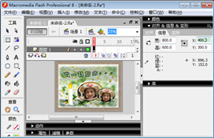
图50 修改位图属性
3）在图层1上插入一个新的图层2，将库中的声音文件拖入到舞台中的任意位置。选中图层2上的任意一帧，在属性面板中将声音的同步方式修改为“开始”。
4）在图层2上插入一个新的图层3，将库中的“蝴蝶”元件拖入两次，分别放在舞台的左下角和右下角。选中左下角的“蝴蝶”，选择菜单“修改|变形|水平翻转”命令对其进行翻转。
4）在图层3上插入一个新的图层4，将库中的“遮罩文字”拖入到舞台中的适当的位置。
5）在图层4上插入3个新的图层（图层5、图层6和图层7）。选择图层5的第1帧，从库中拖入创建好的蝴蝶飞舞的影片剪辑，放在舞台的任意位置，并通过变形工具和“修改|变形”菜单修改它们的大小、方向等。同样，在图层6的第10帧处单击右键，选择“插入空白关键帧”，将多个蝴蝶飞舞的影片剪辑拖入到舞台中并对大小、方向或位置进行修改。对于图层7的第20帧执行同样的操作。
6）选择菜单“控制|测试影片”观看动画输出效果。
6.Flash动画的发布和导出
Flash动画制作完成后，可以将其发布，或将其导出为多种文件格式以便进一步处理。
1）选择菜单“文件|发布设置”，打开“发布设置”对话框。勾选需要发布的格式，如“Flash”和“HTML”。
2）切换到“Flash”选项卡，勾选“压缩影片”以减小文件大小和缩短下载时间，通过JPEG品质设置文件中包含的位图的品质。
3）单击“发布”按钮，将在存放Flash文档（.fla文件）的文件夹下导出选中的文件格式。也可以选择菜单“文件|导出|导出影片”命令在指定的文件夹下导出并保存Flash影片(*.swf)。